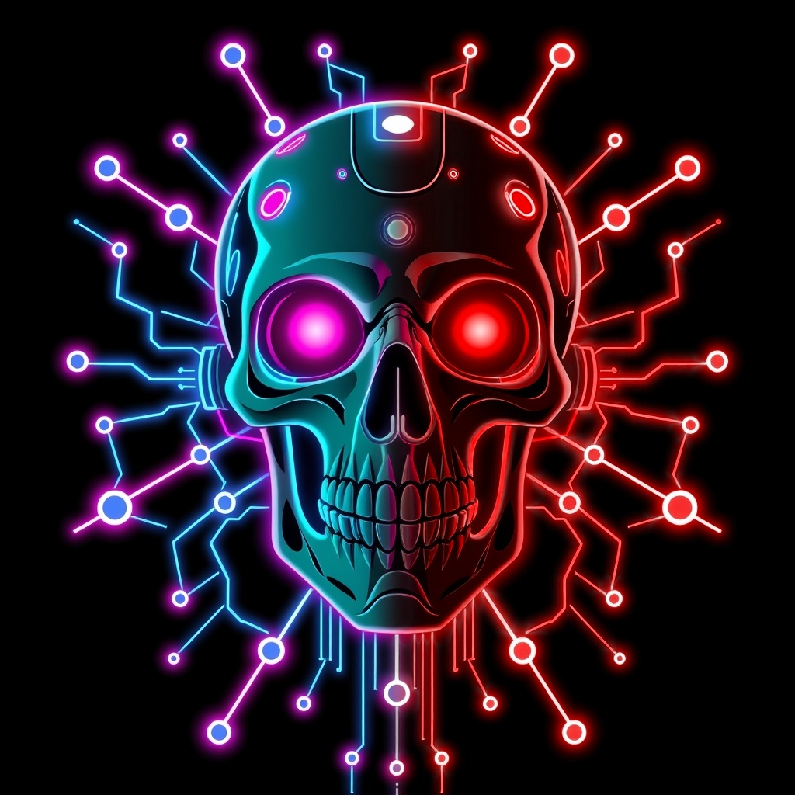

cldNexus
Cyberpunk-Tools, Games & Bots
Wir sind Nico und Nick und bauen Dinge, die gut aussehen und funktionieren.
- Tools für Terminal und Alltag im CyberSkull-Look
- Games und Spielideen
- Bots und Automatisierung
- Claude-Code-Skills, die wir untereinander teilen